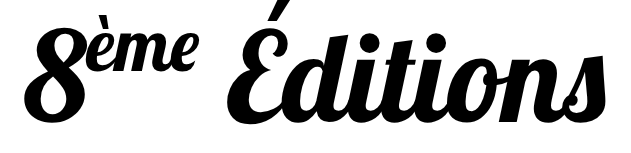

Un Tremplin d'écriture pour les étudiant.e.s de Bourgogne-Franche-Comté
Né en 2017 au cœur de la Chorale universitaire de Besançon, le Tremplin d'écriture de textes de
chansons
a pour vocation de mettre en lumière les talents d'écriture des étudiant.e.s de
Bourgogne-Franche-Comté.
L'idée ? Écrire un texte qui sera, pour le lauréat, mis en musique et chanté par la Chorale
Universitaire de Besançon lors de son concert de fin d'année et à d'autres occasions. C'est
pourquoi
nous demandons de porter une attention particulière au rythme, au nombre de pieds et aux rimes.
Les textes sont étudiés par un jury de
professionnels de la
musique qui récompense les trois textes lui
semblant répondre le mieux aux critères définis et le mieux écrit. Mais bien sûr, nous valorisons
tou.te.s les participant.e.s, grâce à diverses lectures de leurs textes en public, et récompensons
leurs
efforts.
Montrez-nous votre talent en participant ! Seul.e ou à plusieurs,
n'hésitez pas, toutes les participations sont les bienvenues.

La 8ᵉ éditions du tremplin
Thèmes :
Vous écrivez déjà ? Faites-nous découvrir vos talents !
Vous êtes tout simplement curieux ? Tentez l'aventure seul.e ou à plusieurs !
Les candidatures ne sont pas encore ouvertes.
L'idée est d'écrire un texte qui sera mis en musique et chanté par la Chorale Universitaire de Besançon,
c'est pourquoi nous demandons de porter une attention particulière au rythme, au nombre de pieds et aux
rimes et avoir plus de chance d'être retenu et remporter le premier prix.
Tou.te.s les étudiant.e.s inscrit.e.s dans un établissement d’enseignement supérieur de Bourgogne
Franche-Comté peuvent concourir (étudiants de l’Université, BTS, classes préparatoires, écoles
d’ingénieur.e.s, de commerce…).
Soirée conviviale de remise des prix
Chaque année,
nous vous invitons à la soirée de remise des prix gratuite, ouverte à tous, conviviale et artistique
à la Maison des Étudiants de Besançon
pour élire le 1ᵉʳ, 2ᵉ et 3ᵉ textes lauréats et le “coup de chœur” des choristes
1ᵉʳ Prix
???
2ᵉ Prix
???
3ᵉ Prix
???
Comment participer ?
Vous êtes étudiant.e ? Un groupe d'étudiant.e.s ?
Ou encore un.e professeur.e qui souhaitez faire participer ses élèves ?
Remplissez le formulaire ci-dessous et envoyez-nous votre texte !
Amusez-vous, surprenez-nous
Les quelques critères du texte à avoir en tête :
respecter le thème
être une œuvre originale, non publiée
comporter un titre
comporter un refrain (qui peut être répété) et 3 couplets maximum
porter une attention au rythme du texte, au nombre de pieds et aux rimes
être écrit en français, anonyme, rédigé numériquement en police taille 11